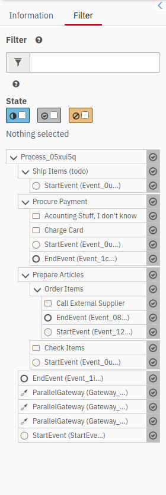
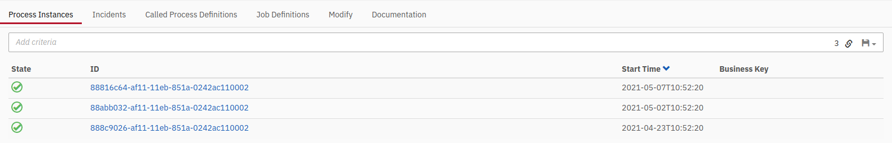
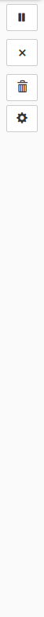

<div id="main">
  <div class="left">
    
  </div>  
  <div class="middle">
    <div id="modeler">
      <div id="diagram_container"></div>
    </div>
    <div>
      
    </div>
  </div>
  <div class="right">
    
  </div>
</div>


<div id="prototype-toggle">
  <div>
    Diagram opening:
    <select id="openingSelect">
      <option value="plus">Plus Button</option>
      <option value="overlay">Overlay</option>
    </select>
  </div>
  <div>
    Diagram Navigation:
    <select id="navigationSelect">
      <option value="tree">Tree</option>
      <option value="cockpit-tree">Cockpit Tree</option>
    </select>
</div>
</div>

<style>
  body {
    overflow: hidden;
    margin: 0;
  }

  #main {
    display: flex;
    height: 775px;
  }

  .middle {
    display: flex;
    flex-direction: column;
    justify-content: space-between;
    height: 100%;
  }

  #header, #breadcrumbs {
    display: block;
  }

  #properties_panel, .propertiesPanel {
    float: right;
  }

  #diagram {
    display: inline;
  }
  #diagram_container {
    display: inline;
    position: fixed;
    margin: 25px;
  }

  button {
    border: 1px solid rgb(204, 204, 204);
    background-color: white;
    border-radius: 2px;
    padding: 5px;
  }
</style> 

<link rel="stylesheet" href="./concepts/navigation/breadcrumbs.css">
<link rel="stylesheet" href="./style.css">

<script type="module" src="./script.js" ></script>